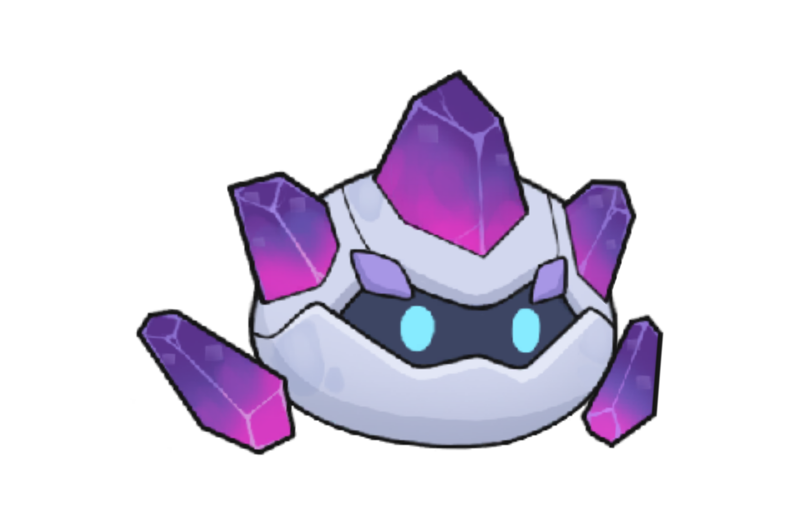
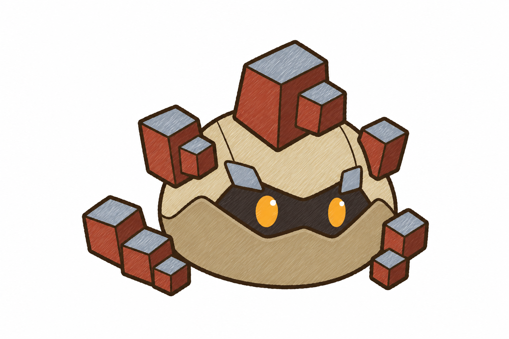
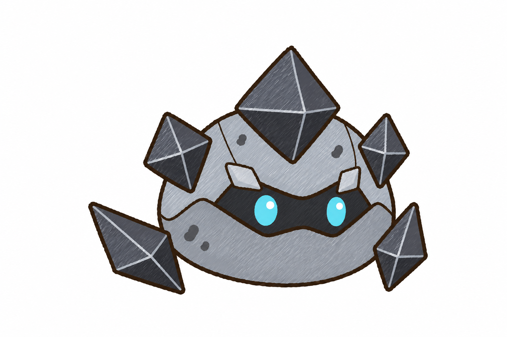
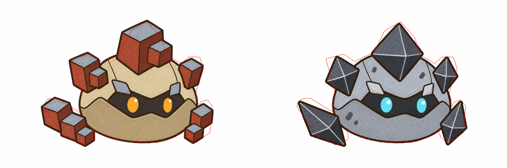

Tinh linh quặng sắt (tướng 3 đảo Kim) — concept lượt 1

Con gốc monster_3371 (khung 0 idle): chỉ để so dáng, chỗ, cỡ từng mảnh

B đá cát + hematit đỏ: cụm khối lập phương, mắt hổ phách

C đá xám lam + từ thạch đen: tinh thể bát diện gờ bạc, mắt xanh lơ
Hướng A (đá xám + cục quặng sắt gỉ, giữ gần dáng tinh thể gốc) bị bộ lọc của Codex từ chối hai lần, chưa có ảnh.

Viền đỏ = hình bóng con gốc chồng lên B và C (độ khớp 0,91 / 0,92)